街中
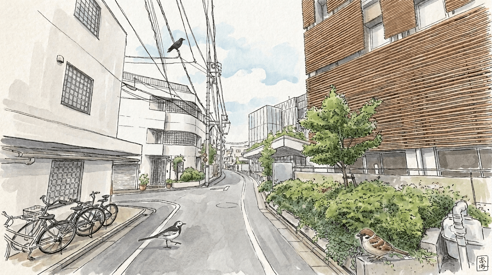
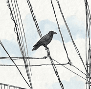
カラス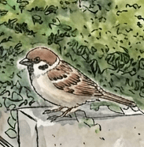
スズメ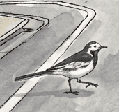
ハクセキレイ歩道をぴょんぴょん跳ねるスズメや、電柱のてっぺんから街を見下ろすカラス、電線でおしゃべりするムクドリたちに出会えます。
公園
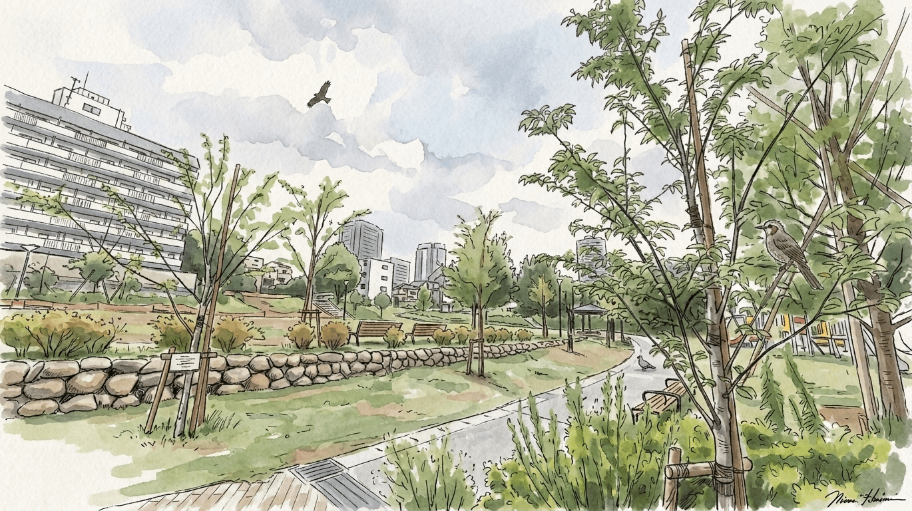
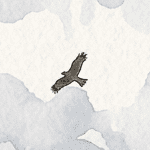
トビ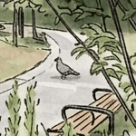
ドバト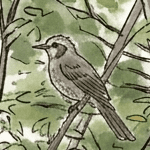
ヒヨドリ
緑豊かな公園は鳥たちのオアシスです。芝生の上を忙しく歩き回るムクドリやハト、
木の幹のまわりをボサボサ頭で飛び交うヒヨドリの賑やかな声が聞こえてきます。
運が良ければ、キリッとした顔のモズに出会えることも。
川
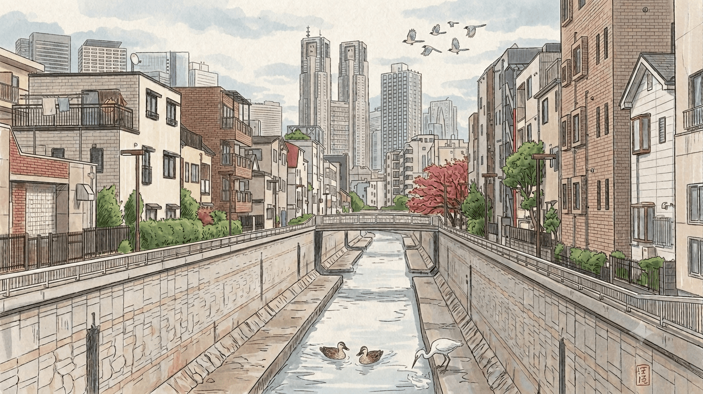
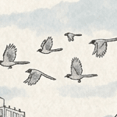
オナガ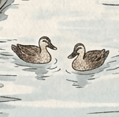
カルガモ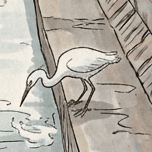
コサギ
川沿いへ行くと、ガラリと出会える鳥が変わります。浅瀬で足をピョコピョコ動かして魚を探す真っ白なコサギや、
水際を尾羽を振りながら早歩きするセキレイ、放置されたゴミをついばむカラス、空を優雅に円を描いて飛ぶトビを見上げるチャンスです。